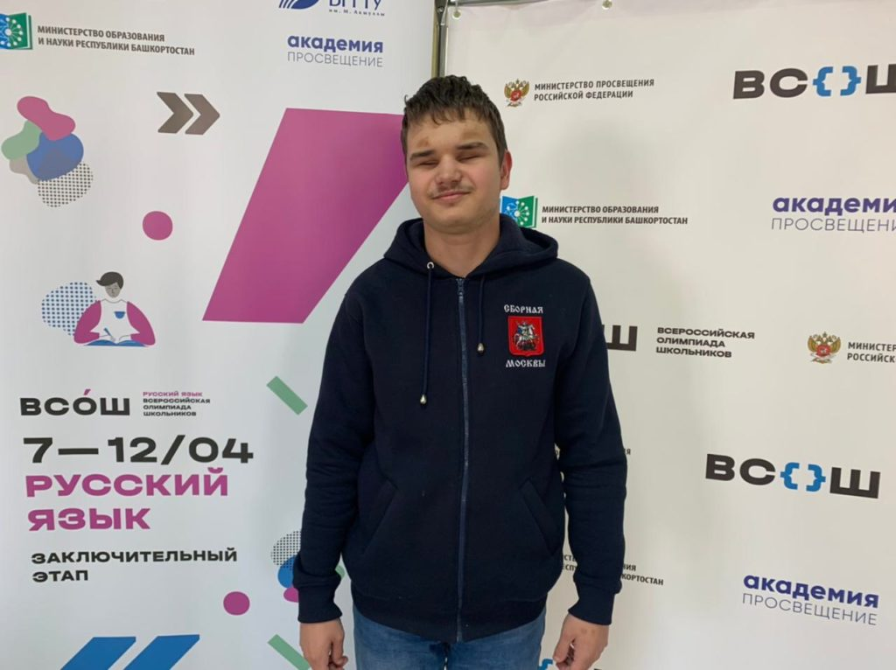

Обо мне
Всем привет! Я Андрей Якубой, незрячий студент ФиКЛ «Высшей школы экономики». Здесь я буду рассказывать обо всём, что мне интересно:
- О лингвистике;
- Об информационных технологиях;
- О доступности цифрового контента для незрячих.
Почему лингвистика?
Будем честны: я никогда не был гуманитарием. Меня не впечатляет классическая литература, особо не интересуют исторические события, а про философию вообще молчу. Зато всегда интересовала информатика и информационные технологии.
Но как-то раз я, от нечего делать, поучаствовал в московской традиционной олимпиаде по лингвистике. После этого я понял, что язык — это не хаос, что у каждого языка существуют свои, достаточно строгие законы. А когда я узнал, что существует компьютерная лингвистика, я понял: это моё!
Всероссийская олимпиада школьников по русскому языку
Олимпиадами по русскому языку я начал интересоваться тогда же, когда и олимпиадами по лингвистике. Несмотря на то, что раньше опыта участия незрячих школьников в олимпиадах почти не было, у меня, кажется, получилось неплохо: в одиннадцатом классе я стал призёром заключительного этапа, благодаря чему и поступил на бюджет*. :-)
Подробности моего участия в этой и других олимпиадах можно почитать в интервью, которое я дал порталу «Мел» вскоре после получения диплома.
Брайль
Шрифт Брайля — одно из важнейших средств реабилитации незрячего человека. Без него невозможно ни чтение, ни письмо. И пусть многие говорят, что брайль умирает — этого не произойдёт. Потому что не может восприятие на слух заменить чтения (и не имеет значение, глазами или пальцами). Я верю, что брайль будет жить всегда.
С некоторого времени я работаю над тем, чтобы совместить шрифт Брайля и компьютерные технологии.
Русский язык в проекте Liblouis
Liblouis — брайлевский транслятор с открытым исходным кодом. Вы спросите: что такое брайлевский транслятор?
Брайлевский транслятор — программа (или программная библиотека), которая переводит обычный текст в шрифт Брайля и обратно. Дело в том, что в брайле много специфических правил, которые помогают удобнее читать текст. В связи с этим невозможно просто послать обычный текст на брайлевский принтер и получить качественную брайлевскую распечатку. Более того, правила брайля разные для разных языков, потому и нужны так называемые «трансляционные таблицы» — набор правил, руководствуясь которым брайлевский транслятор может конвертировать текст в брайль.
С марта 2020 года я занимаюсь поддержкой русских трансляционных таблиц в брайлевском трансляторе Liblouis. К сожалению, до этого момента наши соотечественники не могли бесплатно и удобно готовить брайлевские распечатки. Смею надеяться, теперь ситуация меняется. :-)
Электронные справочники брайлевских обозначений
Одна из причин, почему шрифт Брайля теряет популярность в России — невозможность быстро найти информацию о нём в Интернете. Все имеющиеся брайлевские справочники были изданы ещё в СССР, на бумаге, а теперь экземпляров этих книг почти не осталось в библиотеках для слепых. Недавно я вместе с небольшой группой энтузиастов начал проект по оцифровке имеющихся брайлевских справочников. Пока, к сожалению, у нас нет ни одного готового материала, но скоро это должно измениться.
Другое
А ещё я занимаюсь оценкой доступности сайтов и мобильных приложений для людей с ОВЗ. Считаю, что так я могу сделать мир лучше.
Кроме того, активно интересуюсь темой инклюзивного образования, программированием и многим другим.